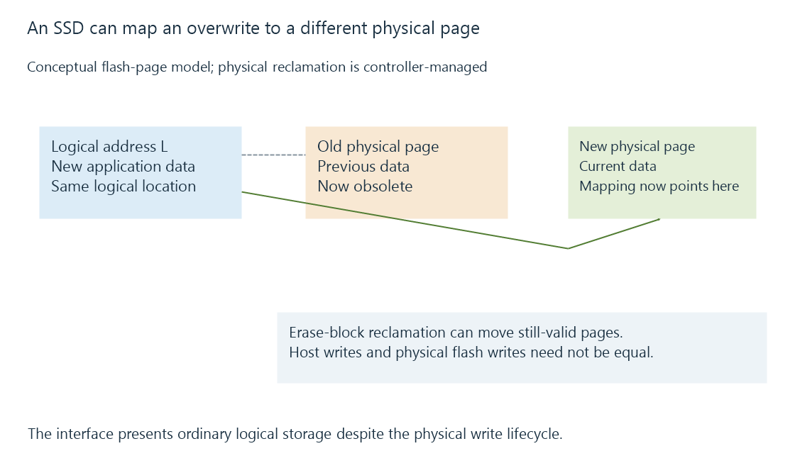

Solid-state drives: flash access, writes and endurance
A solid-state drive accesses flash through a controller that manages physical pages, erased blocks, spare space and write endurance.
A solid-state drive stores data in nonvolatile memory, commonly NAND flash. It has no rotating platter or head to reposition, which greatly changes the cost of scattered reads. Opening artwork, looking up small files and serving database operations can benefit even when a film's bulk read rate would fit comfortably within HDD performance.
An SSD is still a storage system with a controller, firmware and finite resources. The absence of a seek motor does not make every operation instantaneous.
Why writing is more complicated than reading
Flash is organized into pages within larger erase blocks. Existing data cannot generally be overwritten in place like an ordinary logical sector suggests. The controller maps logical addresses to physical storage, writes new versions and eventually reclaims blocks containing obsolete data.

This mapping lets applications use the drive as a normal block device. It also creates work beyond the bytes the application wrote: moving still-valid data during reclamation contributes to write amplification.
| Operation | What changes for the SSD |
|---|---|
| Scattered reads | No mechanical positioning between addresses |
| Sustained writes | New pages must remain available and blocks must be reclaimed |
| Deallocation/TRIM | The host tells the drive which logical data need not be preserved |
| Very little free capacity | The controller may have less flexibility for reclamation |
A file deletion does not itself prove that every storage layer passed a deallocation request through to the physical device. Bridges, arrays and file-system support participate.
The fast beginning of a copy
Some drives use a faster writing area, often by operating part of their flash with fewer bits per cell. Writes can begin at that area's speed, then slow when it fills and data must be folded into denser storage.
The size and behavior of such a cache depend on the model, free space and current workload. A short copy into an idle drive therefore does not establish its sustained write rate during a long recording or bulk import. Thermal limits can also influence long transfers.
Endurance is a workload budget
An endurance rating such as TBW describes an amount of host-written data under the manufacturer's stated warranty conditions. It is not a counter that predicts an exact failure instant.
For a fictional 300 decimal TB rating and 100 decimal GB of host writes per day, the arithmetic is 300,000 ÷ 100 = 3,000 days. The real interpretation also needs the warranty's time limit and conditions. Reads of an existing movie collection contribute little to that host-write total; temporary output, recordings and application updates contribute writes.
Finally, “SSD” describes the medium, while SATA and NVMe describe interfaces and command arrangements. A SATA SSD is still solid-state storage, and an M.2-shaped device does not identify its protocol by shape alone.
See Also
- NVMe storage: commands, PCIe lanes and queues
- SATA storage and negotiated interface rates
- Storage caches: reusable reads and deferred writes